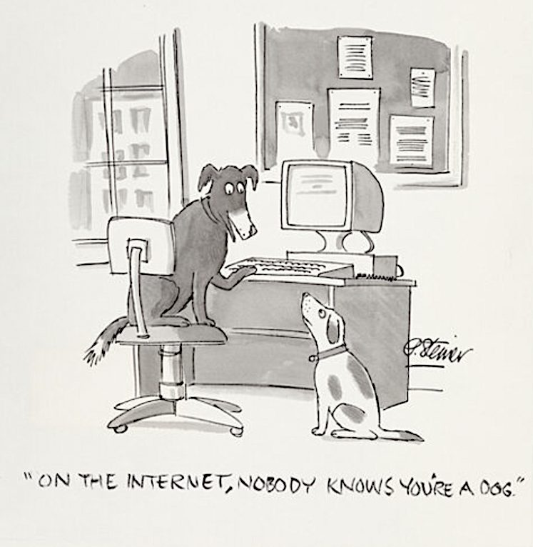

I became a New Yorker five years ago. Before then I lived in Toronto. I was also a stage magician, kino bro, and
full blown computer geek until I landed on being an artist with an inclination for utilizing code within my work. All of these past selves still live within me and inform my art and
sense of self. I adore narrative, misdirection, miracle, and breaking open technology, and try to inform my art with these values.
I moved here to pursue my BFA at Parsons, focusing on interactive sculptures and algorithmic art for the latter half of my degree.
Through a course I took at Parsons not too dissimilar from this one (Radical Software, taught by Rory Solomon), I met
some people who would become long-term collaborators as I began to work with //PIXELMOUTH, an artist collective with
a focus on performance and tech art.
Chronomancy: A school of magic dealing with movement through time, or the manipulation of time.As I've explored integrating technology into my art, I have become more passionate about some of the
political issues that surround technology currently. Data sovereignty, decentralization, open-source initiatives,
and free access to educational content are all topics I look forward to deepening my engagement with during my
time at ITP. In perticular, I find tools that fight back against AI's growing presence in our lives fascinating.
Nightshade and Shieldfont come to mind as interesting examples.
On a more personal note, I spend a lot of my time these days running and writing Dungeons and Dragons campaigns and
thought I would share what I believe to be the three sickest schools of magic in fantasy:
This short address from Audre Lord that was delivered in 1979 is still poignant with it's central metaphor.
The master's tools, or the dominant narratives and systems that define society and culture at any given moment,
are specifically designed and enacted to never allow for meaningful, bottom-up change to come from within them.
I interpret the "master's tools" within the context of disturbing code to be the (pre)dominant technological systems
we engage with. Within a system such as social media we can find small wins, disrupt, and reimagine through
social channels, but we will never change the fact that a large company owns our data, builds a
profile of us, and sells it to the highest bidder. To meaningfully dismantle the impact that tech oligarcs
have on our lives, we must abandon these systems all together, instead of attempting to mutate them into something
acceptable. Cut out the middle man, connect with those around you who have differing needs from your own, and
design new tools that serve you and your peer.
I often think about all the cultural forces that feel like they've always existed due to the fact I was born after their peak.
Michael Jackson has always been famous to me, I have never known a world without him as "The King of Pop." I don't
think I'll ever understand what it felt like during the 70s to watch his rise to super stardom, and this means
I'll always lack a certain reverence towards him. I imagine something similar happens with all the technology
that I take for granted. The "low tech" that defines modern life, and this is often a thankless task.
This manifesto opens with a paragraph that feels like a direct response to Lorde. A radical acknowledgement
of the master's tools, the fact that we cannot ignore or escape them, and that we must adapt around and in spite of them.
Cuboniks immediatly highlights one of these tools, naturalism, that they believe to be suffocating and rooted in counterproductive theology.
While many interesting ideas are brought foward in this text, I find them hard to engage with in concrete ways because they are
just so idealized. I mean, it is a manifesto so I understand why, but a lot of these entries went over my head. One that did stick
with me was 0x0C, specifically the following quote: " Valuable platforms for connection, organization, and skill-sharing become
clogged with obstacles to productive debate positioned as if they are debate. These puritanical politics of shame—which
fetishize oppression as if it were a blessing, and cloud the waters in moralistic frenzies—leave us cold.
We want neither clean hands nor beautiful souls, neither virtue nor terror. We want superior forms of corruption."
While I get lost near the end on what these "superior forms of corruption" could be, the fact that these valuable platforms for connection
are overrun by those arguing in bad faith, seeking reactionary interaction, and being proliferated by automation, rings true for me.
One of the most destructive aspects of the internet is the way it allows for public shame and prosecution in the public opinion.
I recently watched Gregg Araki's new movie I Want Your Sex and a theme
throughout it was the ways in which the internet and social media has made us ashamed of our desires. Too scared to explore sexuality/self
out of a fear of being put on blast and made fun of. A panopticon of sorts has been formed by ourselves, watching everyone else watching us.
Maybe this is the corruption, the desire to look onto others in perverse ways, and we must recorrupt ourselves with our urges we suppress
out of fear of being seen.
I Want Your Sex dir. Gregg Araki
“Before computerized information management, the heart of institutional command and control was easy to locate.”
In other words, wealth used to come with societal scrutiny and expectations. We could storm the castle if those in
power weren’t living up to their role in maintaining civilization. The powerful weren’t morally better because of
this, but they built hospitals, libraries, invested in the arts and sciences, and pioneered infrastructure that
is relied upon still today. They also created a high brow taste, for better or worse. The hyper powerful was a
social circle due to the consolidation of power in physical spaces and assets, leading to a “refined” bourgeoisie.
Now that this wealth and power is divorced from the physical assets, global networks, and history of being a pillar
of a society, the hyper rich can stay in a Silicon Valley basement, make millions, buy a yacht and an NFT, and call
it a day.
This split between reliance on the actual infrastructure, relationships, and people that make a society and
deriving wealth from that society has made civil disobedience that much more difficult to enact.
The streets used to be much more crucial aspects of the economy, and if those that owned them were fucking up,
the streets would be filled with bodies, hurting the powerful directly. How can we disrupt an ISP or
Social Media company as easily as walking out our door? When so many aspects of power come from a place
as abstract as the internet, any attacks on a siloed, more concrete sector of it is “no more disruptive
than a fly biting an elephant.”
My Concern

Can we build trust online without destroying anonimity?
I find myself concerned about what is going to happen to trust on the internet in the face of
mass automation and botting. The internet, for better or worse, has been a crucial part of my upbringing.
It has introduced me to so many people, communities, subcultures, and friends that have formed my view
of the world and I am saddened by the idea that it will become a wasteland of automation and reactionary
bait. I already find myself distrustful of new trends, influencers, talking points, and stories I see online,
wondering what dissemination powers are behind them and if a real person even holds the views that I am reading.
I would love to find a way to rebuild some online trust between strangers. Enable spaces that are predicated on
everyone there being real and the ideas shared being safe from automated interaction and scraping.